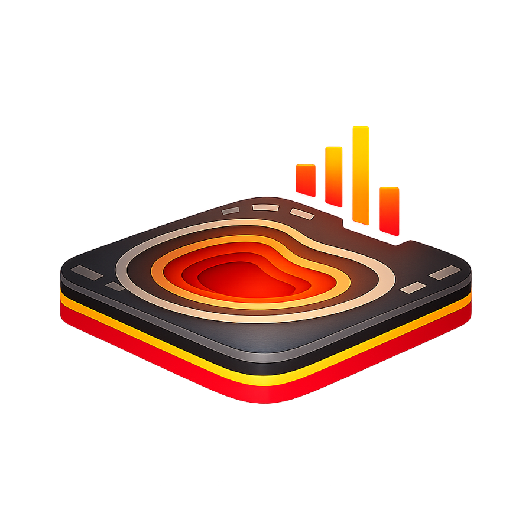
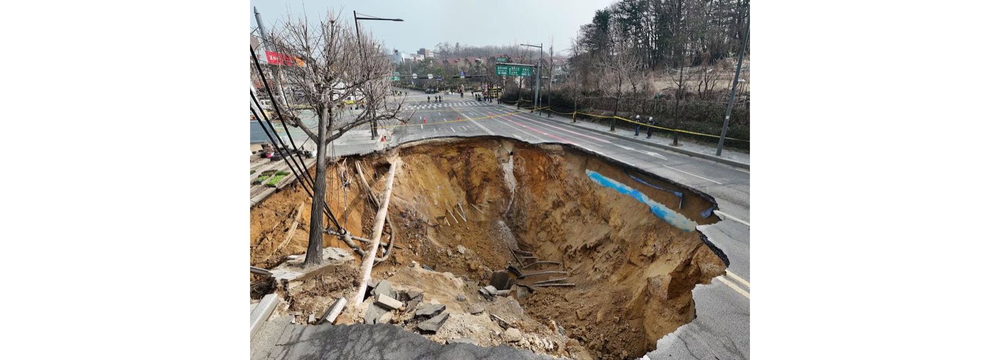
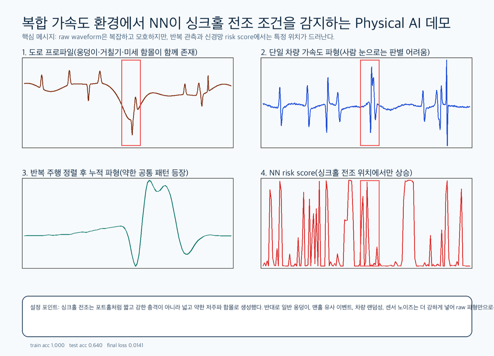

싱크홀은 갑자기 생기지 않습니다. 붕괴 전, 도로는 미세한 신호를 계속 보내고 있습니다. NumTerra는 일상 주행 데이터의 가속도·자이로 신호를 Physical AI로 해석해 싱크홀 전조를 조기에 탐지합니다.

The Problem
싱크홀은 도로 아래 지반 변화가 오랫동안 누적되다 어느 순간 붕괴로 드러나는 도시 재난입니다. 문제의 본질은 위험이 없는 것이 아니라 — 충분히 자주, 충분히 넓게, 충분히 낮은 비용으로 관측할 수 없다는 데 있습니다.

GPR 등 정밀 탐사는 정확하지만 인력·장비·예산 제약으로 주기적일 수밖에 없습니다. 도로는 매일 변합니다.
싱크홀 전조는 맨홀, 포트홀, 과속방지턱, 일반 요철 같은 방해 신호 속에 섞여 사람 눈으로는 구분되지 않습니다.
위험 의심 구간을 미리 좁히지 못하면 예산과 인력은 넓게 분산되고, 실제 위험 구간의 발견은 늦어집니다.
How It Works
더 비싼 일회성 점검이 아니라, 이미 도로 위를 달리는 차량으로 상시 관측망을 만듭니다. 신호처리 + Physical AI + 크라우드 데이터 누적의 4단계 파이프라인입니다.
스마트폰 센서로 주행 중 가속도·자이로·속도·위치·시간을 수집하고, 반복 주행 구간을 확보합니다.
acc / gyro / gps / speedFourier·Laplace 기반 해석으로 노이즈를 제거하고 이벤트를 분리하며, 차량 간 편차를 보정합니다.
fourier / laplace도로·차량·지반 조건을 시뮬레이션해 희소한 싱크홀 전조 데이터를 보완하고 사전 학습합니다.
simulation-first같은 구간의 반복 데이터를 누적해 위치별 기준 신호를 만들고, 위험 구간을 조기에 식별합니다.
crowd baselinePhysical AI
단일 주행의 raw 파형에서 싱크홀 전조는 판별이 불가능합니다. 그러나 반복 관측을 정렬·누적하면 약한 공통 패턴이 드러나고, 신경망 risk score는 전조 위치에서만 상승합니다.
포트홀의 짧고 강한 충격과 달리, 싱크홀 전조는 넓고 약한 저주파 패턴으로 나타납니다.
속도·무게·타이어에 따라 달라지는 센서 반응을 물리 시뮬레이션으로 학습해 정상/이상을 구분합니다.
실주행 데이터가 누적될수록 위험 후보 구간이 더 정밀하게 갱신됩니다.

The App
실시간 센서 HUD로 내 주행의 acc·gyro·speed를 확인하고, 달리는 것만으로 도시의 도로 안전 데이터에 기여합니다.
가속도·자이로·속도를 실시간 그래프로 시각화하고 SPIKE 이벤트를 즉시 포착합니다.
반복 주행으로 누적된 구간별 기준 신호와 위험 후보 구간을 지도로 확인합니다.
이웃의 제보와 검증으로 위험 후보의 신뢰도를 함께 끌어올립니다.
Film
차량 주행 데이터가 어떻게 도시 안전 데이터가 되는지, 1분짜리 소개 영상으로 확인하세요.
Roadmap
Physical AI 기반 앱을 출시하고, 반복 주행 데이터로 도로의 평상시 반응을 학습합니다. 속도·차량 물리를 함께 고려해 과속방지턱·맨홀·포트홀과 싱크홀 전조 후보를 구분합니다.
지자체·도로관리기관에 위험 후보 구간 리포트, 정기 모니터링 대시보드, 실증 프로젝트를 제공합니다. 정밀 탐사를 대체하는 것이 아니라, 어디를 먼저 점검해야 하는지 알려줍니다.
위험 의심 구간 알림, 안전 경로 안내, 지역 도로 상태 정보, 시민 제보 기능으로 확장합니다.
물류·모빌리티·보험 파트너를 위한 API/데이터 라이선스로 확장해, 도시가 스스로 위험을 감지하는 인프라가 됩니다.